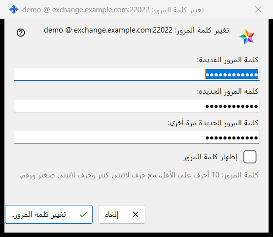
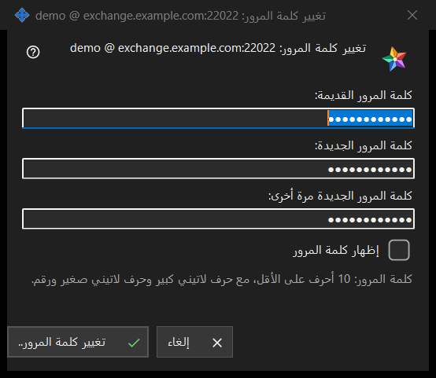

تغيير كلمة المرور
الغرض من هذه النافذة
يغيّر كلمة مرور حساب التبادل الذي سجّل هذا الكمبيوتر الدخول إليه. يُفتح من الزر تغيير كلمة المرور.. في مجموعة حساب التبادل ضمن إعدادات Share Manager، وهو زر لا يظهر إلا عندما يكون الحساب متصلًا. يسمّي العنوان الحساب بصيغة اسم الدخول @ الخادم. لا ترسل النافذة شيئًا بنفسها: فهي تتحقق مما كتبته وتعيده، ثم يرسله اتصال هذا الكمبيوتر، وللخادم الكلمة الأخيرة.


بهذا الترتيب
- في إعدادات Share Manager اضغط تغيير كلمة المرور.. في مجموعة حساب التبادل.
- اكتب كلمة المرور الحالية في (كلمة المرور القديمة:).
- اكتب كلمة المرور الجديدة في (كلمة المرور الجديدة:) وكرّرها في (كلمة المرور الجديدة مرة أخرى:).
- فعّل إظهار كلمة المرور للتحقق من الحقول الثلاثة.
- اضغط تغيير كلمة المرور..؛ وإذا ظهر سطر تحذير فصحّح الحقل واضغط مرة أخرى.
- اقرأ الرد المعروض في المجموعة.
عناصر النافذة
الحقول الثلاثة
كلمة المرور القديمة والجديدة وتكرار الجديدة. الحقول الثلاثة مخفية؛ وعلامة إظهار كلمة المرور الواحدة تكشفها معًا ولا تُحفظ. تُفرَّغ الحقول عند إغلاق النافذة.
قاعدة كلمة المرور
يقول السطر أسفل الحقول: كلمة المرور: 10 أحرف على الأقل، مع حرف لاتيني كبير وحرف لاتيني صغير ورقم. تتحقق النافذة من ذلك فورًا، فتحصل على جواب قبل إرسال أي شيء.
سطر التحذير
يفحص الزر بهذا الترتيب: أدخل كلمة المرور القديمة. ثم: كلمتا المرور غير متطابقتين. ثم القاعدة: كلمة المرور أقصر من 10 أحرف. أو: لا تحتوي كلمة المرور على حرف لاتيني كبير. أو: لا تحتوي كلمة المرور على حرف لاتيني صغير. أو: لا تحتوي كلمة المرور على رقم. أول مشكلة تُوقف الفحص، وتبقى النافذة مفتوحة ولا يُرسل شيء.
ما يحدث بعد الضغط
الإدخال الصحيح يغلق النافذة وتعرض المجموعة الجواب. عند النجاح: تم تغيير كلمة المرور. يستمر هذا الكمبيوتر في العمل، وعلى بقية أجهزة الحساب تسجيل الدخول مرة أخرى. وهناك أجوبة أخرى: كلمة المرور القديمة غير صحيحة. / محاولات كثيرة. انتظر دقيقة ثم أعد المحاولة. / رفض الخادم تغيير كلمة المرور. / لا يوجد اتصال بالخادم. اتصل وأعد المحاولة. وعندما يرفض الخادم كلمة مرور ضعيفة تُعرض جملته الخاصة.
إلغاء والمفاتيح
إلغاء أو Esc يغلق النافذة دون تغيير أي شيء، بينما Enter يضغط الزر تغيير كلمة المرور.. في هذه النافذة.